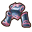
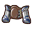
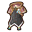
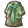
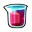

Lv 55 Armor Quest
Errands that unlock each job group's Lv 55 armor shop.
- Items needed
- Spell Users:
 Crystal
Crystal - Fighters: none
- Backpackers: 1 of each petal (see Flower Petals):
- Spell Users:
- Repeatable
- The errands can be repeated. The shop opens once
- Reward
- A Lv 55 armor shop, 1 skill point, and an extra item for some groups
On this page
Walkthrough
1. Spell Users: Talented Astrologer Remia
-
Go to the Astrologer's House in Downtown and talk to Talented Astrologer Remia. You need at least 10 Fame. She asks for a Crystal filled with the power of a fairy.
-
Get a
Crystal. -
Take the Crystal to any one of the six element fairies. The fairy fills it with its element.
-
Light: Light Fairy in Acronia Eastern Beach
-
Dark: Dark Fairy in Island of the Undead
-
Fire: Fire Fairy in Staff Desert
-
Water: Water Fairy in Snov Snowfield
-
Earth: Earth Fairy in East Cape
-
Wind: Wind Fairy in Battleship Island
-
-
Bring the Crystal back to Remia. She gives you a Time-Space Staff of that element and adds the Lv 55 armor to her shop under "New goods".
Fairy Staff you get Light  Time-Space Light Staff
Time-Space Light StaffDark Time-Space Dark StaffFire Time-Space Fire StaffWater Time-Space Water StaffEarth Time-Space Earth StaffWind Time-Space Wind StaffWizard, Sorcerer, Sage
Shaman, Elementalist, Enchanter
Vates, Druid, Bard
Warlock, Cabalist, Necromancer
-
Do it once more with a second filled Crystal and Remia gives you 1 skill point.
 Talented Astrologer Remia
Talented Astrologer Remia
 Light Fairy
Light Fairy
 Dark Fairy
Dark Fairy


 Water Fairy
Water Fairy


 Wind Fairy
Wind Fairy
2. Backpackers: Novice Adventurer Porol
- At a Quest Counter, take the quest Mother's Medicine. It has no time limit.
-
Collect 1 of each petal. Flower Petals shows where to find them:
A Farmer's plant skill makes them much easier to get. - Go to Northern Promenade, enter the Northern Magic Shop and talk to the Magic Shopkeeper. She takes the petals and gives you Northern Remedy(Quest).
-
Hand the Northern Remedy in at the Quest Counter. You get a Reward Ticket for Porol.
-
Go to Lower Part of Iron City and give the ticket to Novice Adventurer Porol. He gives you a
 Metal Urchin Spine and opens his shop of boys' and girls' clothes.
Metal Urchin Spine and opens his shop of boys' and girls' clothes.Names with (M) are for men and (F) for women, but
 Geologist Pants(M) is for women.
Geologist Pants(M) is for women.Miner (Tatarabe), Blacksmith, Engineer (Machinery)
Geologist Pants(M)5,200 G Miner Pants(M)5,200 G
Miner Pants(M)5,200 G
Geologist Arm Guard(F)(Drapery58,000 G
Geologist Arm Guard(M)58,000 GFarmer, Alchemist, Marionettist
Ranger, Explorer, Treasure Hunter
 Safari Pants(M)6,000 G
Safari Pants(M)6,000 G Safari Skirt(F)6,000 G
Safari Skirt(F)6,000 G
Safari Jacket(F)52,000 G
Safari Jacket(M)52,000 GMerchant, Trader, Gambler
-
Do the quest a second time and bring Porol another ticket. He gives you 1 skill point.
 Magic Shopkeeper
Magic Shopkeeper
 Novice Adventurer Porol
Novice Adventurer Porol
3. Fighters: Ghost Buster Gadoo
- At the Quest Counter in Northern Promenade, take the delivery quest Before Melting! (Gadoo). You have 30 minutes.
-
Pick up the package from Valeria in the Northern Cafe, next to the save point.
-
Run south to Ghost Shelter and talk to Ghost Buster Gadoo.
-
Gadoo gives you

Ghost Blood and 1 skill point, and opens his shop of fighter armor:Swordsman, Blade Master, Bounty Hunter
Fencer, Knight, Dark Stalker
Scout, Assassin, Commando
Archer, Striker, Gunner
 Valeria
Valeria
 Ghost Buster Gadoo
Ghost Buster GadooGood to know
- Buy a
 Space Time Key (500 G) from the guild merchant before the Fighter delivery. The 30 minutes are tight on the long road south.
Space Time Key (500 G) from the guild merchant before the Fighter delivery. The 30 minutes are tight on the long road south. - Any element works for Remia. The element only changes which staff you get.